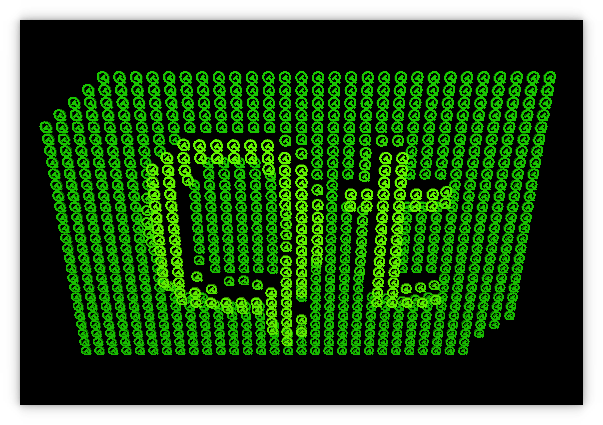

Hello GLES3 Example
Demonstrates OpenGL ES 3.0 functions via QOpenGLExtraFunctions.

Overview
This example demonstrates easy, cross-platform usage of OpenGL ES 3.0 functions via QOpenGLExtraFunctions in an application that works identically on desktop platforms with OpenGL 3.3 and mobile/embedded devices with OpenGL ES 3.0.
This example has no QWidget dependencies, it uses QOpenGLWindow, a convenience subclass of QWindow that allows easy implementation of windows that contain OpenGL-rendered content. In this sense it complements the OpenGL Window Example, which shows the implementation of an OpenGL-based QWindow without using the convenience subclass.
The Qt logo shape implementation is included from the Hello GL2 Example.
In other aspects pertaining to using OpenGL there are the following differences.
- The OpenGL context creation has to have a sufficiently high version number for the features that are in use.
- The shader's version directive is different.
Setting up in main.cpp
Here we instantiate our QGuiApplication, QSurfaceformat and set its depth buffer size:
int main(int argc, char *argv[]) { QGuiApplication app(argc, argv); QSurfaceFormat fmt; fmt.setDepthBufferSize(24);
We request an OpenGL 3.3 core or OpenGL ES 3.0 context, depending on QOpenGLContext::openGLModuleType():
if (QOpenGLContext::openGLModuleType() == QOpenGLContext::LibGL) {
qDebug("Requesting 3.3 core context");
fmt.setVersion(3, 3);
fmt.setProfile(QSurfaceFormat::CoreProfile);
} else {
qDebug("Requesting 3.0 context");
fmt.setVersion(3, 0);
}
QSurfaceFormat::setDefaultFormat(fmt);
We set the default surface format and instantiate our GLWindow glWindow.
Implementing GLWindow
This class delivers the features of the example application.
To start, GLWindow is declared by implementing a subclass of QOpenGLWindow:
class GLWindow : public QOpenGLWindow
The following properties are declared using Q_PROPERTY:
{
Q_OBJECT
Q_PROPERTY(float z READ z WRITE setZ)
Q_PROPERTY(float r READ r WRITE setR)
Q_PROPERTY(float r2 READ r2 WRITE setR2)
The following public functions are declared:
public: GLWindow(); ~GLWindow(); void initializeGL(); void resizeGL(int w, int h); void paintGL(); float z() const { return m_eye.z(); } void setZ(float v); float r() const { return m_r; } void setR(float v); float r2() const { return m_r2; } void setR2(float v);
The following private objects are declared:
private slots: void startSecondStage(); private: QOpenGLTexture *m_texture = nullptr; QOpenGLShaderProgram *m_program = nullptr; QOpenGLBuffer *m_vbo = nullptr; QOpenGLVertexArrayObject *m_vao = nullptr; Logo m_logo; int m_projMatrixLoc = 0; int m_camMatrixLoc = 0; int m_worldMatrixLoc = 0; int m_myMatrixLoc = 0; int m_lightPosLoc = 0; QMatrix4x4 m_proj; QMatrix4x4 m_world; QVector3D m_eye;
On the implementation side, those functions that are not declared inline are implemented (or re-implemented) in glwindow.cpp. The following selections will cover implementation particulars pertaining to the use of OpenGL ES 3.0.
Animations
The following code pertains to the animations, and won't be explored here:
GLWindow::GLWindow() { m_world.setToIdentity(); m_world.translate(0, 0, -1); m_world.rotate(180, 1, 0, 0); QSequentialAnimationGroup *animGroup = new QSequentialAnimationGroup(this); animGroup->setLoopCount(-1); QPropertyAnimation *zAnim0 = new QPropertyAnimation(this, QByteArrayLiteral("z")); zAnim0->setStartValue(1.5f); zAnim0->setEndValue(10.0f); zAnim0->setDuration(2000); animGroup->addAnimation(zAnim0); QPropertyAnimation *zAnim1 = new QPropertyAnimation(this, QByteArrayLiteral("z")); zAnim1->setStartValue(10.0f); zAnim1->setEndValue(50.0f); zAnim1->setDuration(4000); zAnim1->setEasingCurve(QEasingCurve::OutElastic); animGroup->addAnimation(zAnim1); QPropertyAnimation *zAnim2 = new QPropertyAnimation(this, QByteArrayLiteral("z")); zAnim2->setStartValue(50.0f); zAnim2->setEndValue(1.5f); zAnim2->setDuration(2000); animGroup->addAnimation(zAnim2); animGroup->start(); QPropertyAnimation* rAnim = new QPropertyAnimation(this, QByteArrayLiteral("r")); rAnim->setStartValue(0.0f); rAnim->setEndValue(360.0f); rAnim->setDuration(2000); rAnim->setLoopCount(-1); rAnim->start(); QTimer::singleShot(4000, this, &GLWindow::startSecondStage); } GLWindow::~GLWindow() { makeCurrent(); delete m_texture; delete m_program; delete m_vbo; delete m_vao; } void GLWindow::startSecondStage() { QPropertyAnimation* r2Anim = new QPropertyAnimation(this, QByteArrayLiteral("r2")); r2Anim->setStartValue(0.0f); r2Anim->setEndValue(360.0f); r2Anim->setDuration(20000); r2Anim->setLoopCount(-1); r2Anim->start(); } void GLWindow::setZ(float v) { m_eye.setZ(v); m_uniformsDirty = true; update(); } void GLWindow::setR(float v) { m_r = v; m_uniformsDirty = true; update(); } void GLWindow::setR2(float v) { m_r2 = v; m_uniformsDirty = true; update(); }
For more information see the documentation for QPropertyAnimation, QSequentialAnimationGroup.
Shaders
The shaders are defined like so:
static const char *vertexShaderSource = "layout(location = 0) in vec4 vertex;\n" "layout(location = 1) in vec3 normal;\n" "out vec3 vert;\n" "out vec3 vertNormal;\n" "out vec3 color;\n" "uniform mat4 projMatrix;\n" "uniform mat4 camMatrix;\n" "uniform mat4 worldMatrix;\n" "uniform mat4 myMatrix;\n" "uniform sampler2D sampler;\n" "void main() {\n" " ivec2 pos = ivec2(gl_InstanceID % 32, gl_InstanceID / 32);\n" " vec2 t = vec2(float(-16 + pos.x) * 0.8, float(-18 + pos.y) * 0.6);\n" " float val = 2.0 * length(texelFetch(sampler, pos, 0).rgb);\n" " mat4 wm = myMatrix * mat4(1, 0, 0, 0, 0, 1, 0, 0, 0, 0, 1, 0, t.x, t.y, val, 1) * worldMatrix;\n" " color = texelFetch(sampler, pos, 0).rgb * vec3(0.4, 1.0, 0.0);\n" " vert = vec3(wm * vertex);\n" " vertNormal = mat3(transpose(inverse(wm))) * normal;\n" " gl_Position = projMatrix * camMatrix * wm * vertex;\n" "}\n"; static const char *fragmentShaderSource = "in highp vec3 vert;\n" "in highp vec3 vertNormal;\n" "in highp vec3 color;\n" "out highp vec4 fragColor;\n" "uniform highp vec3 lightPos;\n" "void main() {\n" " highp vec3 L = normalize(lightPos - vert);\n" " highp float NL = max(dot(normalize(vertNormal), L), 0.0);\n" " highp vec3 col = clamp(color * 0.2 + color * 0.8 * NL, 0.0, 1.0);\n" " fragColor = vec4(col, 1.0);\n" "}\n";
Note: These are OpenGL version agnostic. We take this and append the version like so:
QByteArray versionedShaderCode(const char *src) { QByteArray versionedSrc; if (QOpenGLContext::currentContext()->isOpenGLES()) versionedSrc.append(QByteArrayLiteral("#version 300 es\n")); else versionedSrc.append(QByteArrayLiteral("#version 330\n")); versionedSrc.append(src); return versionedSrc; }
Initializing OpenGL
Initializing the shader program in handled by initializeGL():
void GLWindow::initializeGL() { QOpenGLFunctions *f = QOpenGLContext::currentContext()->functions(); QImage img(":/qtlogo.png"); Q_ASSERT(!img.isNull()); delete m_texture; m_texture = new QOpenGLTexture(img.scaled(32, 36).mirrored()); delete m_program; m_program = new QOpenGLShaderProgram;
Now the OpenGL version is prepended and the various matrices and light position is set:
m_program->addShaderFromSourceCode(QOpenGLShader::Vertex, versionedShaderCode(vertexShaderSource));
m_program->addShaderFromSourceCode(QOpenGLShader::Fragment, versionedShaderCode(fragmentShaderSource));
m_program->link();
m_projMatrixLoc = m_program->uniformLocation("projMatrix");
m_camMatrixLoc = m_program->uniformLocation("camMatrix");
m_worldMatrixLoc = m_program->uniformLocation("worldMatrix");
m_myMatrixLoc = m_program->uniformLocation("myMatrix");
m_lightPosLoc = m_program->uniformLocation("lightPos");
While not strictly required for ES 3, a vertex array object is created.
delete m_vao;
m_vao = new QOpenGLVertexArrayObject;
if (m_vao->create())
m_vao->bind();
m_program->bind();
delete m_vbo;
m_vbo = new QOpenGLBuffer;
m_vbo->create();
m_vbo->bind();
m_vbo->allocate(m_logo.constData(), m_logo.count() * sizeof(GLfloat));
f->glEnableVertexAttribArray(0);
f->glEnableVertexAttribArray(1);
f->glVertexAttribPointer(0, 3, GL_FLOAT, GL_FALSE, 6 * sizeof(GLfloat),
nullptr);
f->glVertexAttribPointer(1, 3, GL_FLOAT, GL_FALSE, 6 * sizeof(GLfloat),
reinterpret_cast<void *>(3 * sizeof(GLfloat)));
m_vbo->release();
f->glEnable(GL_DEPTH_TEST);
f->glEnable(GL_CULL_FACE);
Resizing the window
The perspective needs to be aligned with the new window size as so:
void GLWindow::resizeGL(int w, int h) { m_proj.setToIdentity(); m_proj.perspective(45.0f, GLfloat(w) / h, 0.01f, 100.0f); m_uniformsDirty = true; }
Painting
We use QOpenGLExtraFunctions instead of QOpenGLFunctions as we want to do more than what GL(ES) 2.0 offers:
void GLWindow::paintGL() { // Now use QOpenGLExtraFunctions instead of QOpenGLFunctions as we want to // do more than what GL(ES) 2.0 offers. QOpenGLExtraFunctions *f = QOpenGLContext::currentContext()->extraFunctions();
We clear the screen and buffers and bind our shader program and texture:
f->glClearColor(0, 0, 0, 1);
f->glClear(GL_COLOR_BUFFER_BIT | GL_DEPTH_BUFFER_BIT);
m_program->bind();
m_texture->bind();
Logic for handling an initial paintGL() call or a call after a resizeGL() call is implemented like so:
if (m_uniformsDirty) {
m_uniformsDirty = false;
QMatrix4x4 camera;
camera.lookAt(m_eye, m_eye + m_target, QVector3D(0, 1, 0));
m_program->setUniformValue(m_projMatrixLoc, m_proj);
m_program->setUniformValue(m_camMatrixLoc, camera);
QMatrix4x4 wm = m_world;
wm.rotate(m_r, 1, 1, 0);
m_program->setUniformValue(m_worldMatrixLoc, wm);
QMatrix4x4 mm;
mm.setToIdentity();
mm.rotate(-m_r2, 1, 0, 0);
m_program->setUniformValue(m_myMatrixLoc, mm);
m_program->setUniformValue(m_lightPosLoc, QVector3D(0, 0, 70));
}
Last, we demonstrate a function introduced in OpenGL 3.1 or OpenGL ES 3.0:
f->glDrawArraysInstanced(GL_TRIANGLES, 0, m_logo.vertexCount(), 32 * 36);
}
This works because we earlier requested 3.3 or 3.0 context.